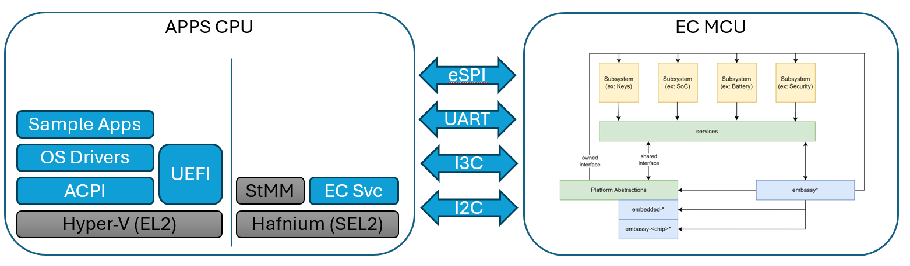
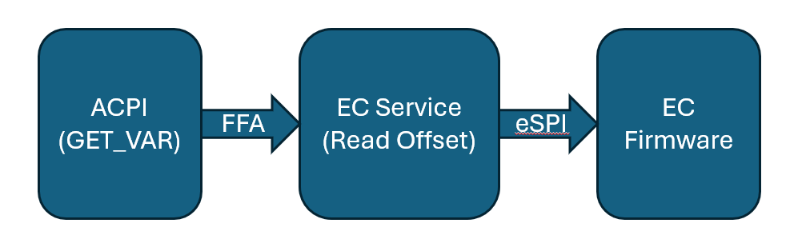

EC Service
On ARM platforms where the interface to the EC is in the secure world, we have a service that runs in the secure world that translates requests from the OS to commands sent to the EC. In the case of MPTF there is a Thermal Service that runs within the EC service to handle requests for custom IO.

ACPI to EC Service Communication
The EC Specification defines commands for get variable and set variable.
EC_THM_GET_VAR = 0x5
EC_THN_SET_VAR = 0x6
Get variable passes in the following structure.
struct GetVar {
inst: u8, // Instance of thermal device, there may be multiple fans
len: u16, // Length of the variable in this case always 4 bytes
uuid: uuid, // UUID of the variable see spec
}
This will return status and data
Set variable passes in the following structure
struct SetVar {
inst: u8, // Instance of thermal device, there may be multiple fans
len: u16, // Length of the variable in this case always 4 bytes
uuid: uuid, // UUID of the variable see spec
data: u32, // 32-bit data to write to variable
}
Returns status.
See ACPI section for further details of FFA definition and sending commands. The instance is normally hard coded in ACPI based off the instance definition of ACPI.
EC Service to EC Communication
The communication between the EC service in the secure world and over to the EC MCU itself can vary from platform to platform.
In the example given here the EC is connected via eSPI and we map a chunk of memory in the peripheral channel directly to various variables. The variable maps to an offset in the peripheral channel where the read and write is done for the corresponding entry.
The EC Firmware is notified when a region of memory is updated and will adjust fan and hardware logic based on these new values.

The EC service receives the get/set variable requests in the thermal service
haf-ec-service/ec-service-lib/src/services/thermal/mod.rs
EC_THM_GET_VAR => {
rsp.struct_to_args64(&self.get_variable(msg));
Ok(rsp)
}
EC_THM_SET_VAR => {
rsp.struct_to_args64(&self.set_variable(msg));
Ok(rsp)
}
From here it converts it to eSPI peripheral reads and writes.